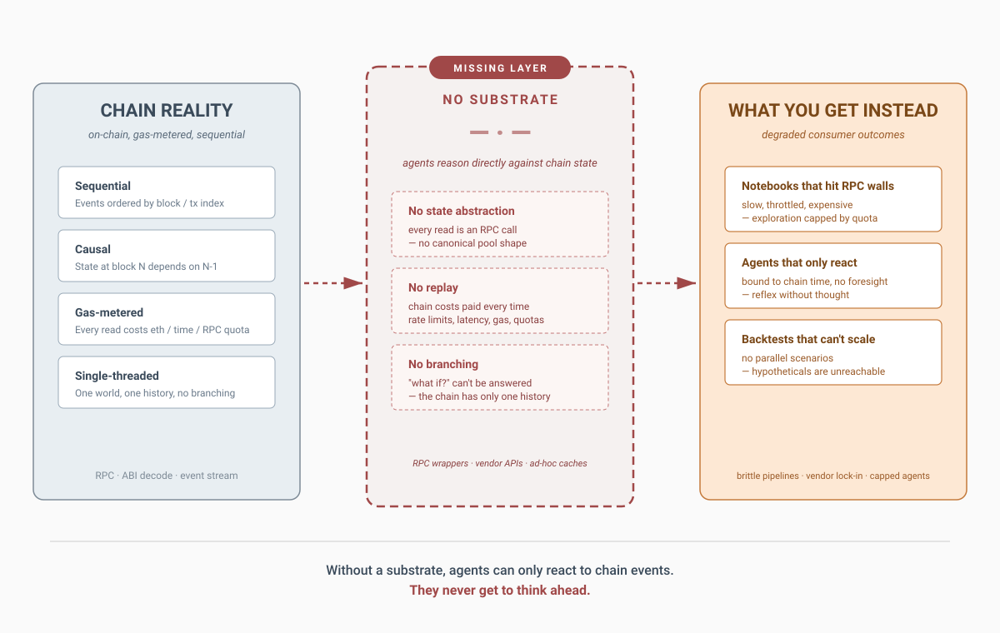
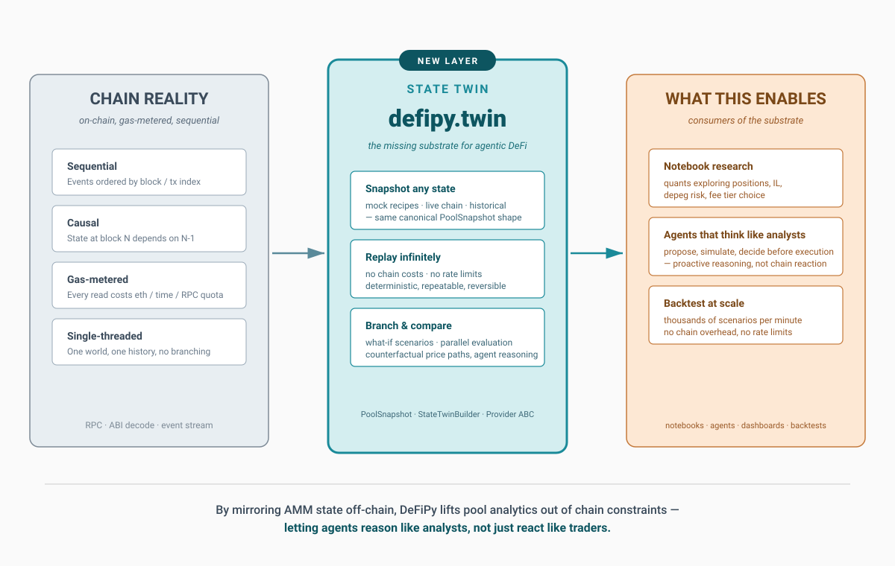

State Twin Concept
The architectural claim
DeFi agents today are stuck in a posture they didn’t choose. Every reasoning step has to wait for a chain confirmation. Every “what if?” requires an actual transaction or a fresh RPC read. Every analytical question stalls behind the next block. The agent never gets to think — it can only react.
This isn’t a UX problem or a latency problem. It’s an architectural problem. Without a layer between the chain and the agent, there’s no place for state to live except on-chain. And on-chain state is sequential, gas-metered, single-threaded, and irreversible. Those properties are correct for the chain — they’re what makes a blockchain a blockchain — but they’re poison for analytical reasoning.
{kind=link}

The diagram above shows the architecture most agentic-DeFi stacks ship today. Chain reality on the left. Consumers on the right. Nothing in between except RPC wrappers, vendor APIs, and ad-hoc caches that fill the void where the substrate should be. The result, for every consumer downstream, is a degraded version of the workflow they actually need — notebooks that hit RPC walls, agents that only react, backtests that can’t scale.
The State Twin
The State Twin is the missing layer. It mirrors AMM state off-chain into a canonical, typed, replayable form. Every primitive in DeFiPy takes an lp argument — an exchange object that holds reserves, fees, tick state, weights, amplification coefficient, whatever the protocol needs. The State Twin is what builds that lp from a declarative snapshot, regardless of where the snapshot came from. MockProvider builds twins from canonical recipes for notebooks and demos. LiveProvider (v2.1) will build them from live chain reads. A custom provider can build them from a CSV file, a database row, a cached block, or a hypothetical scenario the analyst made up. The primitive can’t tell the difference.
{kind=link}

That indirection is what unlocks the cognitive shift. With the State Twin, the agent gets the same surface a human analyst gets: a model of the pool that lives in memory, can be inspected, can be modified, can be replayed, can be branched. The agent stops asking the chain “what would happen if?” and starts simulating it directly — same way an analyst with a notebook reasons through a position before clicking a single transaction.
This is the deepest claim of v2: the State Twin doesn’t just make existing agent workflows faster. It enables a different kind of agent entirely. An agent that can simulate, branch, compare, and decide before executing isn’t a faster reactor — it’s a proactive thinker. Most of the agentic-DeFi narrative right now frames agents as automation, as reflexes that fire faster than humans. That framing is weak because it implicitly accepts the reactive paradigm and just speeds it up. Faster reaction is still reaction. The State Twin reframes the question: not “how fast can the agent execute?” but “what kind of reasoning can the agent do at all?”
Reactive agents have a small action space, bounded by chain time. Proactive agents have a fundamentally larger one, bounded only by their substrate. Time is on the substrate’s side.
Why this works mechanically
Every primitive in DeFiPy takes an lp argument. If the primitive had to know whether that lp was mocked or live, the testability story would collapse — and so would the story of “the same interface for a notebook quant and for an agent.” The twin is the indirection that keeps both stories clean. A quant in a notebook calls AnalyzePosition().apply(lp, ...) against a MockProvider twin. An agent via MCP calls the same primitive against the same twin shape. A v2.1 backtest calls it against a LiveProvider twin built from a historical block. Same primitive, same interface, three regimes — because the State Twin abstracts away where the state came from.
The provider/builder split is what makes this composition work. Providers know about sources. Builders know about shapes. Snapshots are the canonical hand-off between them. Add a new source (a fork node, a database, a custom mock) and you write a new provider — the builder doesn’t change. Add a new protocol (a new AMM family) and you extend the builder — providers don’t change. This is the substrate’s extensibility surface, and it’s why the State Twin generalizes beyond DeFiPy specifically. The pattern is the contribution; the implementation is the proof.
Key Classes
Class:
defipy.twin.StateTwinProviderPurpose: Abstract base class for any source of pool snapshots. Subclass it to define where snapshots come from.
Usage:
class MyProvider(StateTwinProvider): def snapshot(self, pool_id: str) -> PoolSnapshot: ...Example: a worked example for custom providers is included below.
Class:
defipy.twin.MockProviderPurpose: Synthetic pool snapshots for notebooks, tests, and demos. Ships four canonical recipes.
Usage:
MockProvider()Example:
provider = MockProvider()Recipes:
eth_dai_v2,eth_dai_v3,eth_dai_balancer_50_50,usdc_dai_stableswap_A10
Class:
defipy.twin.LiveProvider(v2.1, stub in v2.0)Purpose: Build twins from live chain reads. Constructor signature is stable (
LiveProvider(rpc_url)) so v2.1 adoption is not an API break; calling.snapshot()in v2.0 raisesNotImplementedError.Usage:
LiveProvider(rpc_url="https://...")Status: Ships as a stub in v2.0. Functional implementation lands in v2.1.
Class:
defipy.twin.StateTwinBuilderPurpose: Turn a
PoolSnapshotinto a concrete exchange object. Dispatches on snapshot type — V2, V3, Balancer, or Stableswap.Usage:
StateTwinBuilder()Example:
builder = StateTwinBuilder()
Class:
defipy.twin.PoolSnapshotPurpose: Declarative, protocol-agnostic representation of pool state. The discriminated union base class; subclasses (
V2PoolSnapshot,V3PoolSnapshot,BalancerPoolSnapshot,StableswapPoolSnapshot) carry protocol-specific fields.Usage:
V2PoolSnapshot(pool_id, token0_name, token1_name, reserve0, reserve1)Example:
snap = V2PoolSnapshot(pool_id="custom_eth_usdc", token0_name="ETH", token1_name="USDC", reserve0=500, reserve1=1000000)
Twin Construction Operations
Class:
defipy.twin.StateTwinProviderPurpose: Return a pool snapshot for a given pool identifier.
pool_idsemantics are provider-specific — a recipe name for MockProvider, a chain address for LiveProvider.- Methods:
snapshot(pool_id: str) -> PoolSnapshot- Parameters:
pool_id: Provider-specific identifier.
Output: A
PoolSnapshotof the appropriate protocol subclass.
Class:
defipy.twin.StateTwinBuilderPurpose: Build a protocol-specific exchange object from a snapshot.
- Methods:
build(snapshot: PoolSnapshot)- Parameters:
snapshot: AV2PoolSnapshot,V3PoolSnapshot,BalancerPoolSnapshot, orStableswapPoolSnapshot.
Output: A live exchange object (
UniswapExchange,UniswapV3Exchange,BalancerExchange, orStableswapExchange) functionally identical to what theconftestfixtures produce for the same reserves — sameget_reserveoutputs, same spot prices, sametotal_supply.
Example 1: Build a twin from a MockProvider recipe
from defipy import AnalyzePosition
from defipy.twin import MockProvider, StateTwinBuilder
# Step 1: Pick a provider
provider = MockProvider()
# Step 2: Get a snapshot by pool_id
snapshot = provider.snapshot("eth_dai_v2")
# Step 3: Build the twin
lp = StateTwinBuilder().build(snapshot)
# Step 4: Run any primitive against it — same interface as a conftest pool
result = AnalyzePosition().apply(lp, lp_init_amt=10000.0,
entry_x_amt=1000.0, entry_y_amt=100000.0)
print(result.diagnosis, result.il_percentage)
Example 2: Build a twin from a custom PoolSnapshot
For pools outside MockProvider’s four canonical recipes, construct a PoolSnapshot directly and pass it to StateTwinBuilder. MockProvider’s recipe registry is bypassed entirely.
from defipy import CheckPoolHealth
from defipy.twin import V2PoolSnapshot, StateTwinBuilder
# Step 1: Declare the pool state
snap = V2PoolSnapshot(
pool_id = "custom_eth_usdc",
token0_name = "ETH",
token1_name = "USDC",
reserve0 = 500.0,
reserve1 = 1_000_000.0,
)
# Step 2: Build the twin
lp = StateTwinBuilder().build(snap)
# Step 3: Run any primitive
health = CheckPoolHealth().apply(lp)
print(health.spot_price, health.tvl_in_token0)
Example 3: Write a custom provider
A custom provider subclasses StateTwinProvider and implements snapshot(pool_id). Same contract as MockProvider; different source of truth. This is the hook for fork state, cached blocks, or any snapshot source that isn’t live chain (v2.1) and isn’t a canned recipe.
from defipy.twin import StateTwinProvider, V2PoolSnapshot
class CSVProvider(StateTwinProvider):
"""Load pool state from a per-pool CSV row."""
def __init__(self, csv_path: str):
self.rows = self._load(csv_path)
def snapshot(self, pool_id: str):
row = self.rows[pool_id]
return V2PoolSnapshot(
pool_id = pool_id,
token0_name = row["token0"],
token1_name = row["token1"],
reserve0 = float(row["reserve0"]),
reserve1 = float(row["reserve1"]),
)
def _load(self, path):
... # implementation elided
Note
MockProvider returns bare exchange objects via the snapshot → builder path; it does not return the test-context dataclass (.eth, .dai, .entry_x_amt, etc.) that conftest fixtures provide. Test context is the caller’s responsibility.
Note
PoolSnapshot stays minimal in v2.0 — no block_number, timestamp, or chain_id. Those are LiveProvider concerns and ship in v2.1 when they’re actually needed.